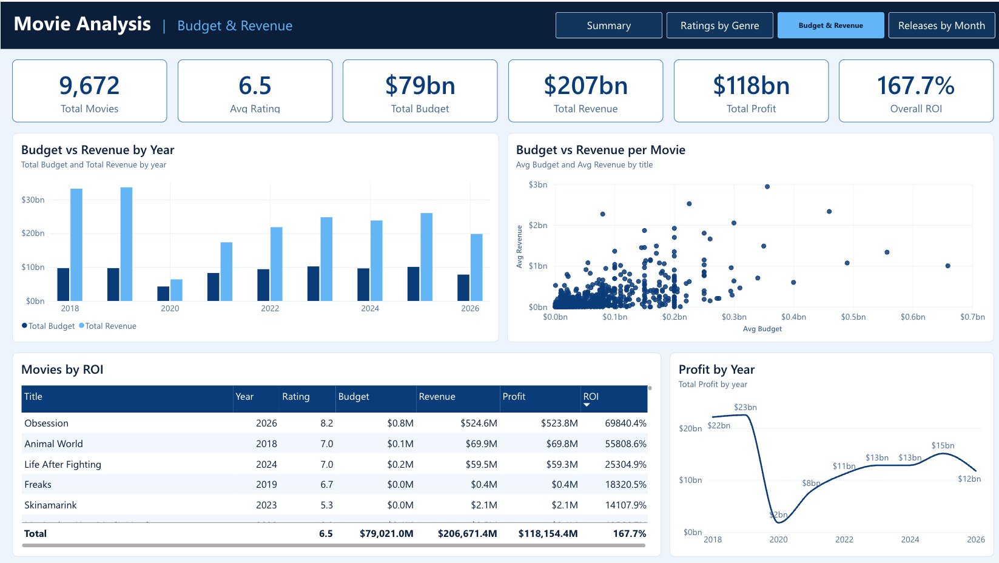
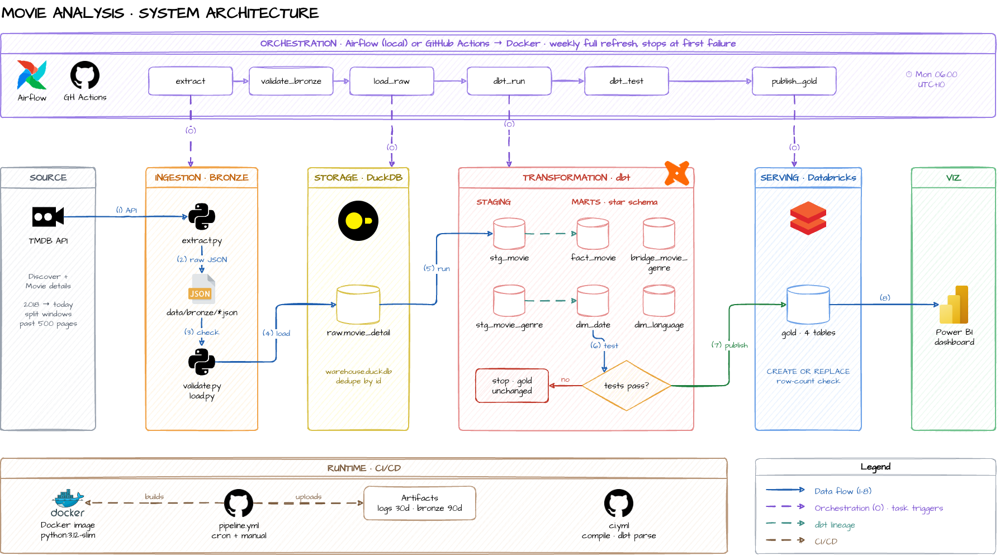

SQL · dbt · Python · Power BI
Where did movie profit actually sit?
A weekly pipeline from the TMDB API into DuckDB, through dbt, and out to Databricks, feeding a Power BI report on films released since 1 January 2018. The question is which money figure is safe to publish once missing budgets are taken out.

-
Frame
Decide whether a profit total or an ROI ranking can go on the page, and what 2020 actually did to the business, once a missing figure is no longer stored as zero.
-
Audit
TMDB writes a missing budget or revenue as 0. Staging turns those zeros into null, and a dbt test blocks the Databricks publish if a zero budget or revenue is still in staging. Profit is revenue minus budget, and ROI is profit divided by budget. Both stay null unless both money fields are known, so the $118bn profit is the both-known subset. It is a different total from $207bn of reported revenue minus $79bn of reported budget, because those two headlines each include films missing the other figure. The extract keeps films with at least 50 votes, which is the 9,672 titles, and is why 2024 onward looks thin. One row in the fact table is one film. Genre rows do not carry revenue.
-
Baseline
The naive read ranks every TMDB row and treats 0 as a real budget. That pulls averages down and sends a film with a blank budget to the top of an ROI table. After the null rule, the baseline for the scale of the business is the profit line: about $22bn in 2018 and $23bn in 2019, in years where revenue sits well above budget.
-
Claim
Profit falls to about $2bn in 2020 and then climbs back through the low tens of billions. Overall ROI on the both-known films is about 168%. That ratio is the wrong headline. Dividing by a very small budget puts Obsession, listed near $0.8M, and Animal World, listed near $0.1M, at the top of the table. The vote filter and the zero-to-null rule remove empty rows. They leave a doubtful small budget free to inflate ROI.
-
Recommendation
Publish the profit-by-year line. Rank ROI only inside a budget band, where a film like Ne Zha 2 can be compared with other large titles. Leave the unfiltered ROI table off any decision. The 2020 drop would be a missing-data artefact if the films without both figures were systematically the profitable ones. The same null rule runs every year, and in 2020 the revenue bar collapses with the budget bar.
